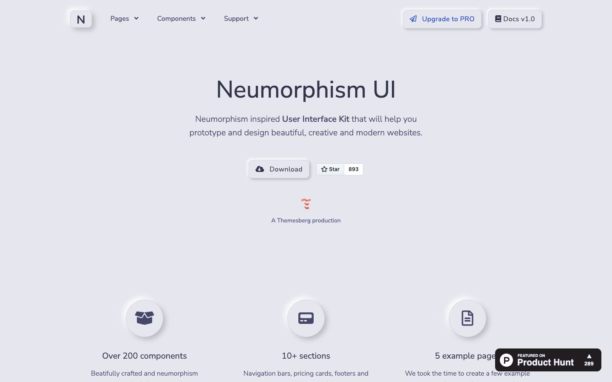

References / Website / 271
Neumorphism UI by Themesberg
The demo of a 2020 open-source Bootstrap kit, set on a pale blue-gray surface with raised buttons and round icon wells.
- Source
- Neumorphism UI demo
- Creator
- Themesberg
- Style
- Neumorphism (agent-proposed, not yet reviewed by a person)
- Moods
- Soft, calm
- Evidence
- Captured with
tools/capture.mjs(headless Chrome, 1440 × 900) on 28 September 2026 and inspected. The screenshot shows the first viewport; the measurement covers up to four screens. - Reviewed
- Rights
- Third-party work, stored with credit for commentary. License: unverified. Rights policy
Context
Source code: themesberg/neumorphism-ui-bootstrap, created on 7 May 2020, MIT License.
Observed
- A pale blue-gray page (about #e6e6ee in the screenshot). A square “N” logo tile, the “Upgrade to PRO”, “Docs v1.0”, and “Download” buttons are raised in the same color.
- Three large round badges with dark icons rise from the surface above “Over 200 components”, “10+ sections”, and “5 example pages”.
- Text is dark slate in a rounded sans-serif (Nunito-like); “Upgrade to PRO” is blue.
- A dark “Featured on Product Hunt” badge covers the lower right corner. A small GitHub star button shows 893.
Why it belongs
The best-known web kit for the style. Its components add a faint border to the paired shadows, which raises contrast but also puts it outside the border limit of the fingerprint.
Measured: shadows on 71 % of boxes (median offset 4.2 px, median blur 7 px, none hard), borders on 68 %, median radius 8.8 px.
Measured
Machine-extracted by tools/extract-traits.js on . Full measurement.
- Type families
- Nunito Sans (100%), SFMono-Regular (0%)
- Type scale ratio
- 1.09
- Median radius
- 8.8 px
- Mean chroma
- 0.06
- Palette
- #e6e7ee 83%
- #44476a 8%
- #31344b 4%
- #18634b 1%
- #2d4cc8 1%
- #a91e2c 1%
- #0056b3 1%
- #525480 1%

